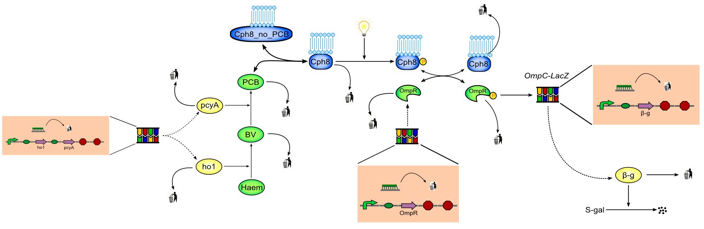

This is a modular modelling tutorial example of the Bacterial Photography system found in Levshaya et al. (2005) "Synthetic biology: Engineering Escherichia coli to see light" Nature 438 (doi:10.1038/nature04405). A schematic of the model is shown in the figure below.
